UTILISATION DU PROJET :
Utilisation du projet:
Avant de faire des tests nous allons voir comment marche le projet.
Pour lancer le projet il suffit de lancer la partie serveur qui se trouve dans le dossier kad-webrtc-master/examples/shared/. Nous l’avons fait tourner sur NodeJS.
Puis il suffit d’ouvrir dans un browser l’index du projet (kad-webrtc-master/examples/webrtc-browser-interactive/).
Nous tombons alors sur l’interface suivante :
Comment ça marche ?
- “This Node” permet de créer un nœud dont l’id sera le nom donner.
- “Connect to node” permet de faire un lien entre le nœud que l’on à créer préalablement et un autre nœud.
- “Get” permet de définir si un élément est récupérable.
- “Put” création d’un couple (clé, valeur) dans le nœud créé. La clé va servir à aller chercher la valeur de la donnée stockée dans le nœud.
Dans un premier temps nous allons utiliser le programme pour fabriquer trois nœuds connectés entre eux de cette manière :
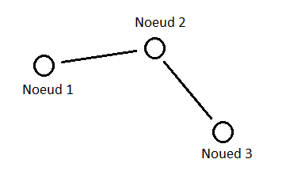
Première étape :
Créer les trois nœuds en ouvrant trois onglet de navigateur. Il est possible d'inspecter la page pour voir si la création de nœud marche.
Deuxième étape :
Faire la connexion des nœuds dans le premier et second navigateur. Si la connexion réussi une petite fenêtre apparaîtra avec comme message :
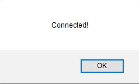
Le but de ce premier test est de voir si un objet stocké dans Noeud 1 est visible par Noeud 3 en passant par Noeud 2.
D’abord pour vérifier que la connexion entre les Noeud soit bien établie on va stockée dans Noeud 2 un couple (1, Pomme) grâce à la commande Put:
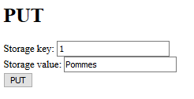
La commande put faite dans le browser Node 2, un message de réussite s’affiche :
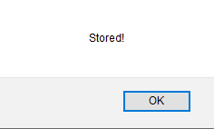
Puis on essaye d’y accéder en utilisant la commande GET:
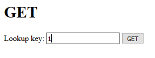
Dans les browsers contenant les Nœuds 1 et 3. On devrait alors tomber sur une fenêtre :
Il existe donc bien une connexion (Noeud 1, Noeud 2) et (Noeud 2, Noeud 3).
De la même manière que précédemment nous allons stocker des “abricots” dans Node 1 avec la clé “2” et des mandarines dans Node 3 avec la clé “c”. On stock avec Put et récupère les éléments avec Get.
Il est bien sur possible de créer plus de connexion mais il faut faire attention à ne pas surcharger le serveur.
Test pour trouver les failles du projets:
Créer plusieur noeuds dans un seul browser que ce passe-t-il?
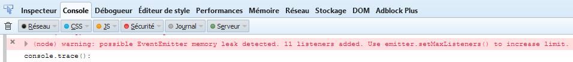
Interprétation. Qu’est-ce que cela signifie ? Bonne question mes amis.
Stockage d’élément sur une même clé :
On va mettre en évidence le fait que l’on peut écraser des éléments stockés à tout moment avec n’importe quel utilisateur.
Pour cela on repart sur l’exemple simple suivant :
On se demande ce qu’il se passe lorsque je stocke un élément dans le Noeud 1 et que je réécris un autre élément avec la même clé.
Dans Node 1 on stock (1,”patates”), puis on stock un deuxième objet (1,”tomates”). Du point de vue de tous les utilisateurs seul le dernier élément entré est visible. Ce qui veut dire qu’on ne peut plus accéder à des “patates” sur Noeud 1.
Mais le problème ne s’arrête pas là si l’on stock (1,”salade”) dans le Node 3, dans ce cas “tomates” sera remplacé par “salade” et sera accessible par Node 3.
Imaginons que les éléments stockés sont des fichiers à télécharger, dans ce cas cela voudrait dire que pendant que quelqu’un télécharge un fichier on peut l’arrêter en remplaçant ce fichier par un autre avec la même clé.
Connecter un Noeud à lui-même :
Pour tester si le programme est intelligent, nous allons connecter un Noeud à lui-même. Ce qui est inutile puisque nous avons directement accès à ce qui est sur notre ordinateur.
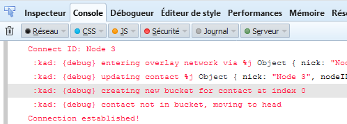
Il est effectivement possible de créer une connexion sur un même utilisateur. Le problème c’est que le programme fait le chemin de connexion qui existe entre tous à partir de notre nœud et définis si ce chemin existe déjà.
Maintenant si on imagine qu’il existe des milliers d’utilisateur cela veut dire que si l’on essaye de connecter un nouveau PC il faudra reconstruire la quasi-totalité de la structure et non pas seulement lui dire “Ton voisin c’est lui”.
De plus refaire la connexion entre deux nœuds est inutile. Et bien avec ce programme c’est aussi possible, ce qui veut dire que l’on va revérifier tous les chemins possibles entre deux Nœuds qui sont déjà connectés ensemble.
Stockage d’un même élément mais avec une clé différente :
On reprend pour la nième fois le premier exemple vu. On va stocker dans Noeud 1 un élément (1,”kebab”) et dans Noeud 3 (4,”kebab”). Cela marche bien et ne pose pas vraiment de problème, il y aura juste deux moyens d’arriver à une même solution. Ce qui n’est pas vraiment gênant.
Essayé de récupérer un élément inexistant :
Pour cela on va rentrer dans la fonction Get une valeur de clé inexistante.
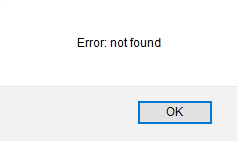
Ce cas de figure est pris en compte par le système. Si une clé n’est utilisée par aucun des utilisateurs sur lesquels on est connecté, une erreur est retournée.
Insérer des valeurs sans clé :
Il est possible de stocker des éléments sans clé. Dans ce cas la clé de l’élément est comptée comme “NULL” et pour le récupérer il ne faudra rien mettre dans partie “Get” de notre page html.
Créer deux nœuds avec un même nom :
Il est possible de créer deux Noeuds ayant le même nom, mais ils ne pourront jamais être connectées ensemble. Lorsque l'on crée un Noeud “Test” en double et que l’on essaye de le connecter à un Noeud déjà existant il se passe :
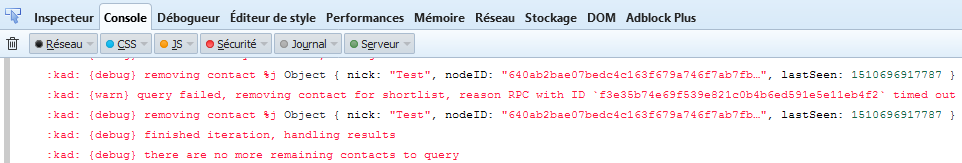
Impossible de faire la connexion avec le nœud “Test”. Il est possible de rajouter des choses dans “Test” mais ils ne seront pas visibles sur le réseau créé par les nœuds.
Le problème est si l’on crée un Noeud qui existe déjà on risque de couper toutes les connexions à ce nœud.
Pour cela on va faire un deuxième nœud “Test2” qui sera reliée aux Nœuds 1,2. Puis on va faire un deuxième nœud “Test2” puis on va tester si la connexion entre le premier “Test2” et les trois nœuds est altérée.
Donc dans un premier temps no connexion ressemble à ça :
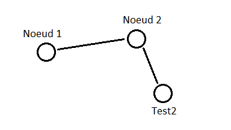
On met l’élément (test, courge) dans le nœud “Test2”. “courge” est donc accessible à partir de tous les nœuds. Maintenant on rajoute un deuxième nœud avec comme nom “Test2”:
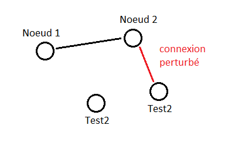
On vient de parasiter la connexion avec “Test2”. Il est toujours possible de connecter d’autre nœud a “Noeud 1” ou “Noeud 2” mais pas à “Test2”. De plus tous les éléments rajoutés dans le “Test2” connecter ne sera pas visible. Seuls les éléments déjà stockés au préalable seront accessible. Il sera préférable de limiter les noms donnés aux nœuds.